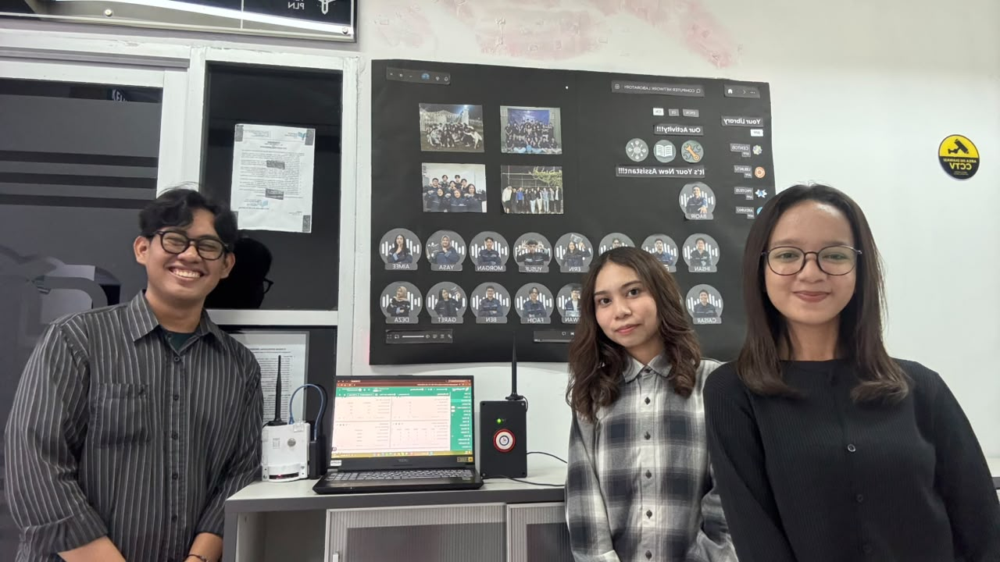
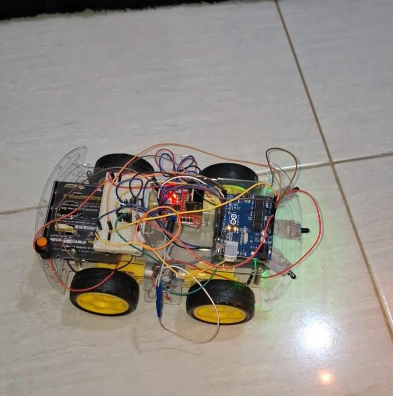

Featured Projects
Innovative solutions combining hardware engineering and software development

IoT-Based Early Fire Detection System Using LoRaWAN
Designed and developed a fire detection system prototype using ESP32, Arduino Uno R3, multi-sensor (DHT22, MQ-2, IR Flame), and LoRaWAN communication for densely populated areas.
- 100% Packet Delivery Ratio (PDR) in Line-of-Sight testing
- Real-time monitoring dashboard via ThingsBoard IoT Platform
- Automatic Gmail notifications for emergency response
- 3D designs created with AutoCAD & Fusion (Transmitter side)

Automatic Fire Detection & Extinguishing Robot
Built an autonomous mobile robot integrating flame detection sensors and Arduino Uno R3 for navigation and fire-point detection with real-time extinguishing actuator mechanism.
- Autonomous navigation & fire-point detection
- Real-time threat response control algorithm in C++
.jpg)
HVAC Automation System
Designed the control system architecture and I/O mapping for HVAC system automation using Omron PLC with interactive HMI for real-time monitoring and set point adjustment.
- Ladder Diagram control logic via CX-Programmer
- User-friendly HMI for real-time monitoring